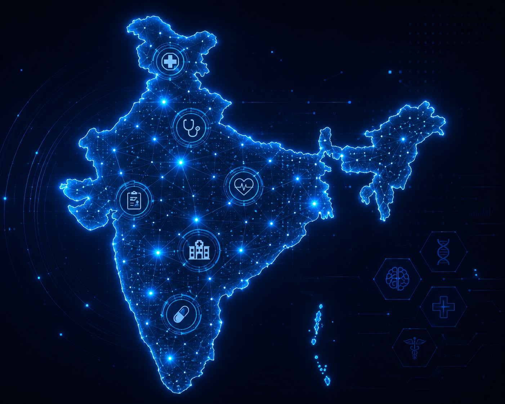

India's AI Healthcare Journey
Artificial Intelligence is helping India improve healthcare through digital health records, telemedicine, smart hospitals, and faster medical diagnosis. Government initiatives and modern technologies are making quality healthcare more accessible across the country.

🏥 AIIMS AI Initiatives
AI-powered diagnosis, research, and clinical decision support improve patient care.
💻 eSanjeevani
India's telemedicine platform connects doctors and patients across the country.
📋 Ayushman Bharat Digital Mission
Creating secure digital health records and improving healthcare accessibility.
🤖 Smart Hospitals
AI supports imaging, robotic surgery, patient monitoring, and hospital management.